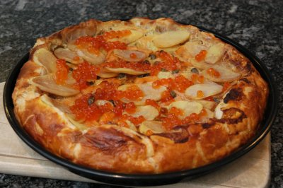

| Zutaten für 4 Personen: | |
| 1 Paket | achteckig ausgewallter Blätterteig, (270 g) mit 33 cm Durchmesser |
| 350 g | Frischlachs |
| 1/2 Paket | Pelicansud, 125 g, tiefgekühlt, was auch immer das ist |
| Salz | |
| Pfeffer | |
| Guss: | |
| 2 | Eier |
| 1 Becher = 180 g |
Saucen-Halbrahm |
| 1 Zweig | Estragon |
| Belag: | |
| 200 g = 2 Stück |
Kartoffeln |
| 20 g | Butter |
| 3 El | Wermut Noilly Prat oder Weisswein |
| 30 g = 1 kl Döschen |
Lachsroggen |
Den Backofen auf 225°C vorheizen.
Das Wähenblech von 24 oder 26cm Durchmesser fetten und mit dem Blätterteig belegen. Den Teig rund ein Zentimeter über den Rand hochstehen lassen. Den Boden mit einer Gabel mehrmals einstechen. Optional aus den Teigresten kleine Fische ausstechen. Beides bis zur Verwendung kaltstellen.
150 Gramm Lachs in feine Streifen schneiden und zugedeckt in den Kühlschrank stellen.
Den Rest mit dem noch leicht gefrorenen Pelicansud im Cutter pürieren.
Mit Salz und Pfeffer würzen. Die Lachsfarce auf dem Teigboden verstreichen.
Für den Guss die Eier verquirlen. Drei Esslöffel davon beiseite stellen.
Den Rest mit Saucen-Halbrahm verrühren. Etwas Estragon mit der Schere direkt dazu schneiden. Mit Salz und Pfeffer würzen.
Guss über die Farce giessen.
Lachsstreifen verteilen.
Den Teigrand auf die Füllung klappen. Die ausgestochenen Fische mit Wasser auf den Teigrand kleben.
Mit beiseite gestelltem Ei bepinseln.
Die Tarte im unteren Teil des vorgeheizten Backofens zehn Minuten vorbacken.
Inzwischen die Kartoffeln schälen und mit dem Gemüsehobel in sehr dünne Scheiben hobeln.
Butter und Noilly Prat oder Weisswein in einem Pfännchen warm werden lassen.
Nach zehn Minuten die Kartoffelscheiben ziegelartig auf der Tarte verteilen. Mit dem Buttergemisch bestreichen und die Tarte in weiteren 20 Minuten fertig backen.
Vor dem Servieren die Tarte mit dem Lachsroggen und einigen Estragonblättchen verzieren.
Dazu passt roter Chicoréesalat oder ein lauwarmes Gemüse.
Die Tarte können Sie als Vorspeise für 6 Personen oder als Hauptgang mit Salat oder Gemüse für vier Personen servieren.
Anstelle des Lachses die etwas weniger fette Lachsforelle oder Forellenfilets verwenden.
Brückenbauer Nr. 50, 14.12.94, S. 8&9
Es geht hier um frischen Lachs und nicht geräucherten.
Das grosse Rätsel ist was ist Pelicansud? Pelican ist die Marke unter der die Migros ihr Fischzeug verkauft. Ich schätze, es handelt sich um irgendwelche Fischresten. Oder um einen Fischfond? Habe das weggelassen und das Rezept gelang auch so ganz ordentlich.
Die Tarte hat sehr gut geschmeckt. RE 21.3.2008